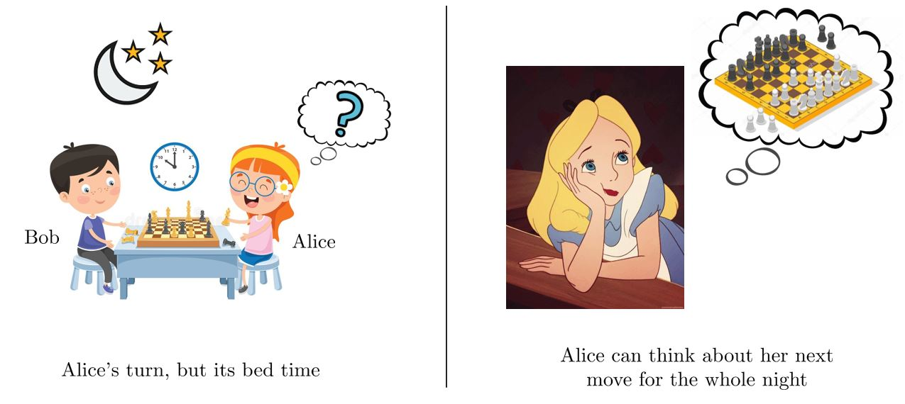
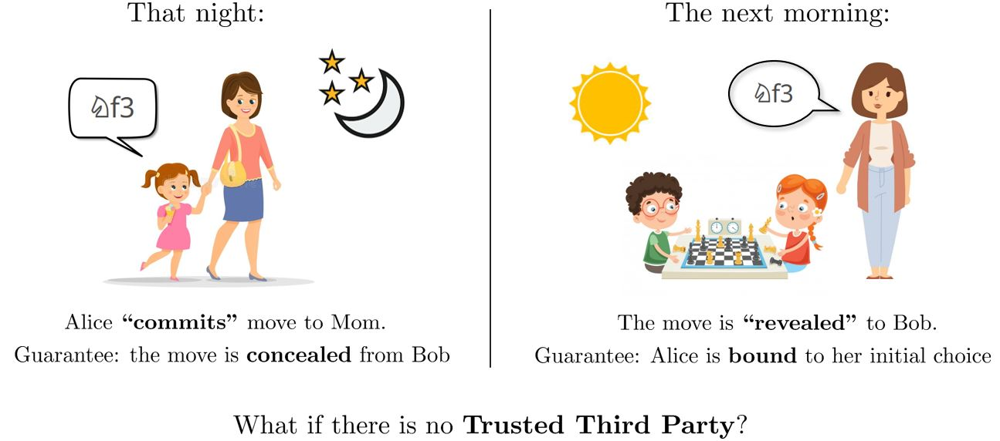
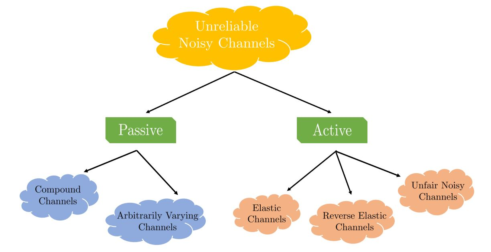
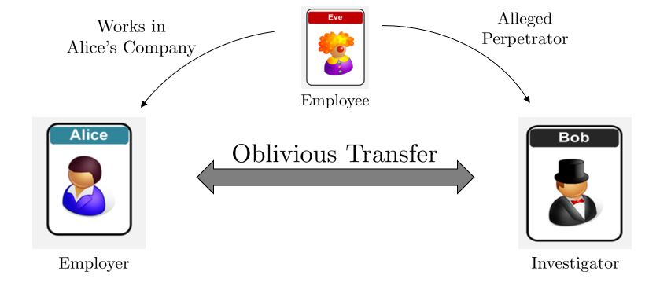
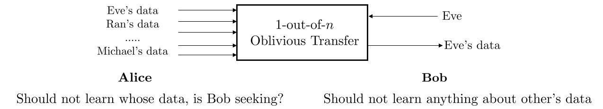
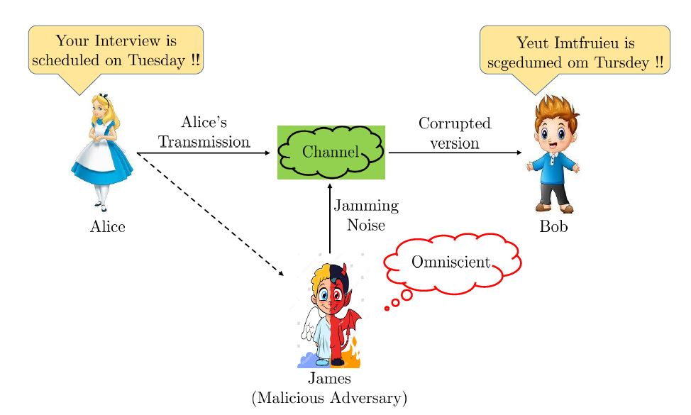
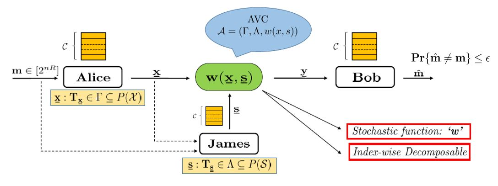

Research SummaryInformation-theoretic Security and Cryptography
Bit Commitment
Collaborators: Prof. Amitalok J. Budkuley (supervisor), Prof. Manoj Mishra, Manideep Mamindlapally, and Pranav Joshi Bit Commitment is a widely studied cryptographic primitive with multitudinous applications in secure Multiparty Computation (MPC), blockchains, zero-knowledge proofs, sealed-bid auctions, etc. Consider two siblings, Alice and Bob, who are playing a game of chess. However, it’s late at night so they decide to adjourn the game and continue in the morning. But, there’s a problem! Who makes the last turn? If it is Alice, Bob has the entire night to think about his turn until the next morning, leading to an unfair advantage; similar is the case if Bob makes the last turn.
 A possible solution to this problem is that both of them can reach out to their mom and say, Alice covertly reveals her move to mom that she is going to make the next morning. The next day, when they continue the game, Alice is bound to make the same move as Bob can verify it by asking mom. Therefore, it ensures fair play in the game in the presence of mom - “a third party”. However, in real-world scenario, the third party might not be available or its availability might be costlier. Therefore, can we achieve this kind of functionality without a third party?  The answer to this question lies in the Commitment Protocol, which was introduced by [Blum]. Specifically, we have studied Commitment over Discrete Memoryless Channels (DMCs) under input costs constraints and cahracterized it primal and dual capacity expression. Further, we have also been exploring commitment over unreliable channels. Unreliability comes in two forms viz., paasive unreliability and active unreliability. The passively unreliable channel models are often poorly characterized such that the exact channel characteristics remain obscure to both the parties taking part in the commitment protocol. These channels are studied in information theory through the lens of compound channels and arbitrarily varying channels. Further, a stronger form of unreliability (“active” unreliability) comes into the picture if either of the two parties knows the exact channel behavior and can control the channel characterstics covertly, without the other party knowing about the same, in order to gain unfair advantage/information. Such channel models include Unfair Noisy channels (UNCs), Elastic Channels (ECs), and Reverse Elastic Channels (RECs). In particular, we have explored the commitment capacity of constrained DMCs, compound channels, and reverse elastic channels, which involves deriving a robust upper bound (converse) and designing computationally efficient and capacity-achieving commitment schemes. Our current work focuses on unifying all such channel models into a single frame of an unreliable channel model for studying commitment which can reduce to different channels (compound, ECs, RECs, UNCs) under different conditions .  Example courtesy: [Winter et. al] Oblivious Transfer
Bachelor's Thesis Project  So, can this kind of functionality be acheived or implemented? The answer to this questions takes us to Oblivious Transfer (OT) protocol!!  OT is an oblivious exchange of messages between two users. Similar to the commitment problem, our work is concentrated on implementing/realizing “unconditionally-secure (information-theoretically secure)” oblivious transfer over noisy channels. Specifically, we are studying OT over the class of unreliable channels. Currently, we are studying (im)possibility results and fundamental performance limits of OT over compound discrete memoryless channels and it sub-class of compound binary erasure channels (C-BEC). The OT capacity characterization involves providing a robust converse (upper bound) for OT rate and designing a computationally-efficient OT scheme with rate that achieves this upper bound. Furthermore, we are also currently exploring OT over adversarial channels (AVCs). Adversarial CommunicationsThe works of Shannon and Hamming in the mid 20th century led to the inceptions of information theory and coding theory, respectively. Though, both the fields are closely intertwined, the analyses made by Shannon and Hamming in their work were based on two completely different perspectives. On one hand Shannon analysis revolved around stochastic (random) noise model to understand the tade-off between “rate” and “error” in communication, while on the other hand Hamming's analysis was based on the worst-case noise to understand the trade-off between “rate” vs “distance” of a code. Today, after more than 70 years after their developments, a lot is known about fundamental performance limits over stochastic (“average-case”) channels which are the part of the Shannon's world. Contrastingly in Hamming's world, we donot know much about the fundamental performace limits of channels with “worst-case” noise. This limits us to justify the optimality of the existing coding schemes in the Hamming's world. Collaborators: Prof. Sidharth Jaggi (supervisor), Dr. Yihan Zhang, and Prof. Amitalok J. Budkuley Our work focuses on bridging this gap between the two extremes of information theory and coding theory via the mathematical abstraction of Arbitrarily Varying Channels (AVCs). It involves exploring fundamental performance limits as well as (im) possibility results, and desiging robust and optimal information processing schemes under malicious interference. Unlike the stochastic noise channels (such as discrete memoryless channels) as studied by shannon, Arbitrarily Varying Channel models involve a potentially malicious third-party a.k.a jammer who inflicts jamming noise “carefully” into the channel based on his observations or capabilities in order to disrupt the communication between the legitimate parties.  In our work, we are studying reliable communication in the most general scenario of a jammer modelled via omniscient arbitrarily varying channels (omniscient AVCs). The jammer in such channel models is omniscient to the sender's message, codebook, transmitted codeword and the channel law and inflicts jamming sequence (noise) into the channel based on these observations. Our goal so far has been to explore the (im) possibility results for communication over such channels and to study fundamental and acheivable performance limits. We show that the communication over an omniscient AVC is possible iff it satisfies the “non-symmetrizablility” condition. We have deisnged a cloud-code construction (inspired by satellite codes in broadcast channels) which achieves a large positive rate using a two-step decoder at the receiver. Furthermore, we have also dereived sufficient conditions for omniscient AVCs under which simpler decoding rules such as jointy-typicality decoding, MMI decoding, etc. suffice and the code achieves the same positive rate as that by using a two-step decoder.  Currently, we are also studying communication over the class of “myopic” AVCs in which the jammer is comparitively weaker than that in the case of omniscient AVCs, and therefore, observes the noisy version of the transmitted codeword. Low Probability of Detection ProblemCollaborators: Prof. Laura Luzzi (supervisor), and Prof. Ligong Wang |